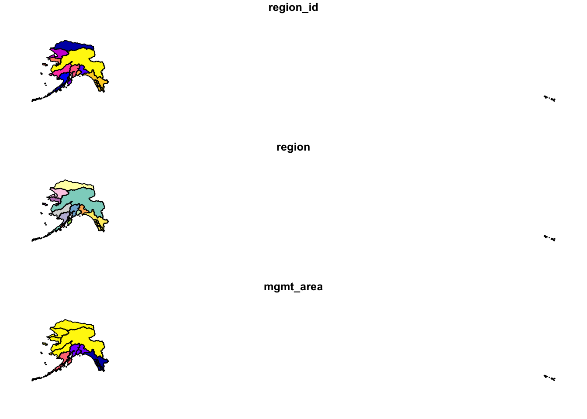
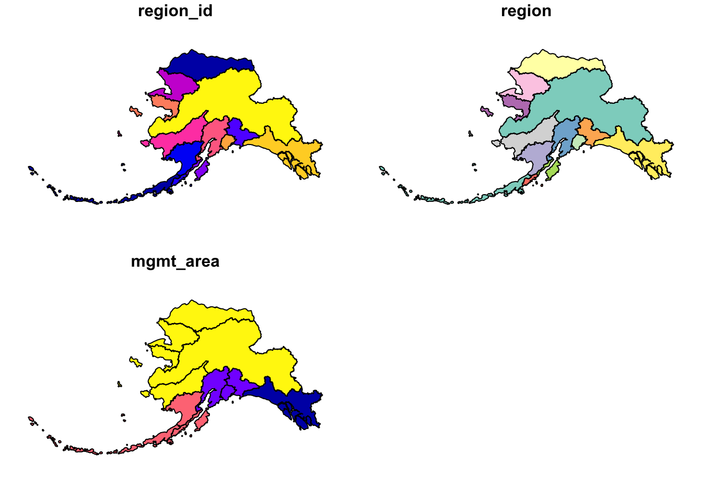
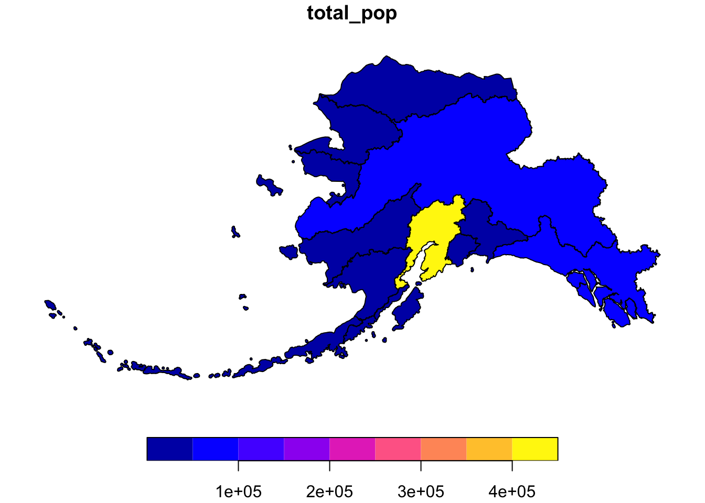
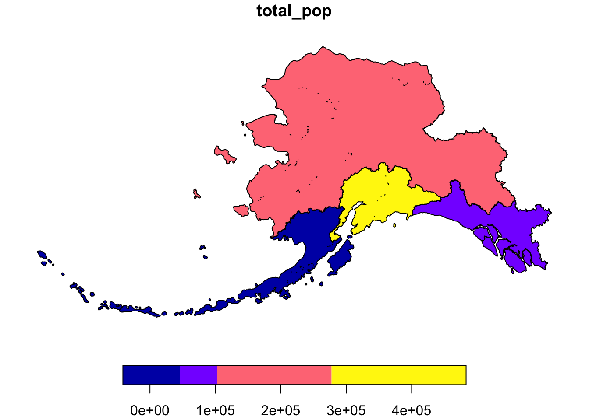
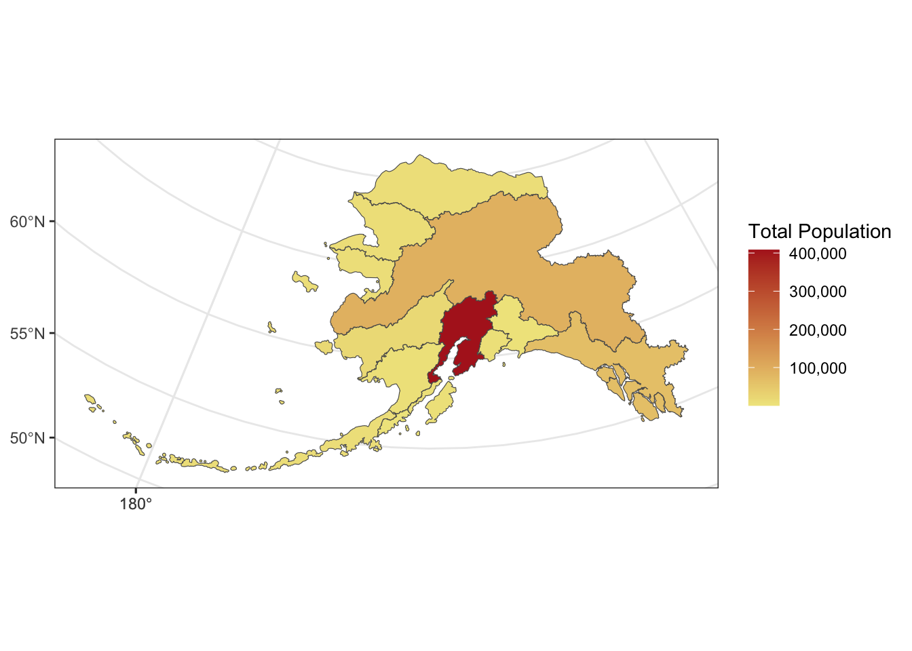
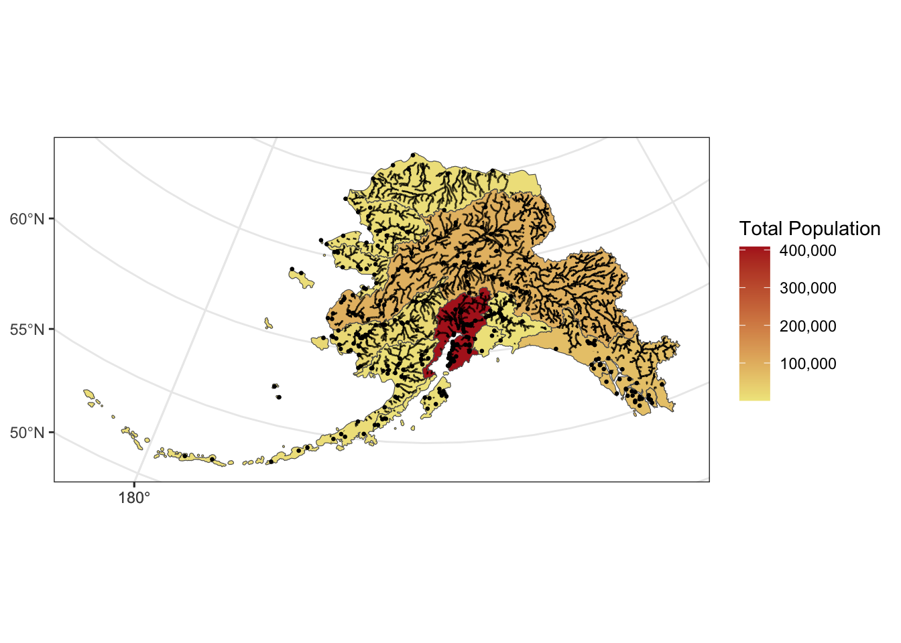

pacman::p_load(sf, dplyr, ggplot2, scales, ggmap)7 Population distribution of Alaska
Credit: Reproducible Research Techniques for Synthesis: Matt Jones
The sf package is an R implementation of Simple Features. This package incorporates:
- a new spatial data class system in R
- functions for reading and writing data
- tools for spatial operations on vectors
Most of the functions in this package starts with prefix st_ which stands for spatial and temporal.
Our goal is to use a shapefile of Alaska regions and data on population in Alaska by community to create a map.
Load necessary packages with pacman package manager
- Plot the shapefile of Alaska
## Read in shapefile using sf
ak_regions <- read_sf("data/shapefile/alaska/ak_regions_simp.shp")
plot(ak_regions) 
- Examine it’s class.
class(ak_regions)[1] "sf" "tbl_df" "tbl" "data.frame"- See the data structure
head(ak_regions)Simple feature collection with 6 features and 3 fields
Geometry type: MULTIPOLYGON
Dimension: XY
Bounding box: xmin: -179.2296 ymin: 51.15702 xmax: 179.8567 ymax: 71.43957
Geodetic CRS: WGS 84
# A tibble: 6 × 4
region_id region mgmt_area geometry
<int> <chr> <dbl> <MULTIPOLYGON [°]>
1 1 Aleutian Islands 3 (((-171.1345 52.44974, -171.1686 52.4174…
2 2 Arctic 4 (((-139.9552 68.70597, -139.9893 68.7051…
3 3 Bristol Bay 3 (((-159.8745 58.62778, -159.8654 58.6137…
4 4 Chignik 3 (((-155.8282 55.84638, -155.8049 55.8655…
5 5 Copper River 2 (((-143.8874 59.93931, -143.9165 59.9403…
6 6 Kodiak 3 (((-151.9997 58.83077, -152.0358 58.8271…- View what crs is set by using the function st_crs
st_crs(ak_regions)Coordinate Reference System:
User input: WGS 84
wkt:
GEOGCRS["WGS 84",
DATUM["World Geodetic System 1984",
ELLIPSOID["WGS 84",6378137,298.257223563,
LENGTHUNIT["metre",1]]],
PRIMEM["Greenwich",0,
ANGLEUNIT["degree",0.0174532925199433]],
CS[ellipsoidal,2],
AXIS["latitude",north,
ORDER[1],
ANGLEUNIT["degree",0.0174532925199433]],
AXIS["longitude",east,
ORDER[2],
ANGLEUNIT["degree",0.0174532925199433]],
ID["EPSG",4326]]- This data has a greographic coordinate system (WGS84) with no projection. Let us use the Alaska Albers projection, with an EPSG code of 3338.
ak_regions_3338 <- ak_regions %>%
st_transform(crs = 3338)
st_crs(ak_regions_3338)Coordinate Reference System:
User input: EPSG:3338
wkt:
PROJCRS["NAD83 / Alaska Albers",
BASEGEOGCRS["NAD83",
DATUM["North American Datum 1983",
ELLIPSOID["GRS 1980",6378137,298.257222101,
LENGTHUNIT["metre",1]]],
PRIMEM["Greenwich",0,
ANGLEUNIT["degree",0.0174532925199433]],
ID["EPSG",4269]],
CONVERSION["Alaska Albers (meters)",
METHOD["Albers Equal Area",
ID["EPSG",9822]],
PARAMETER["Latitude of false origin",50,
ANGLEUNIT["degree",0.0174532925199433],
ID["EPSG",8821]],
PARAMETER["Longitude of false origin",-154,
ANGLEUNIT["degree",0.0174532925199433],
ID["EPSG",8822]],
PARAMETER["Latitude of 1st standard parallel",55,
ANGLEUNIT["degree",0.0174532925199433],
ID["EPSG",8823]],
PARAMETER["Latitude of 2nd standard parallel",65,
ANGLEUNIT["degree",0.0174532925199433],
ID["EPSG",8824]],
PARAMETER["Easting at false origin",0,
LENGTHUNIT["metre",1],
ID["EPSG",8826]],
PARAMETER["Northing at false origin",0,
LENGTHUNIT["metre",1],
ID["EPSG",8827]]],
CS[Cartesian,2],
AXIS["easting (X)",east,
ORDER[1],
LENGTHUNIT["metre",1]],
AXIS["northing (Y)",north,
ORDER[2],
LENGTHUNIT["metre",1]],
USAGE[
SCOPE["Topographic mapping (small scale)."],
AREA["United States (USA) - Alaska."],
BBOX[51.3,172.42,71.4,-129.99]],
ID["EPSG",3338]]- Plot it with Alaska Albers projection
plot(ak_regions_3338)
summary(ak_regions_3338) region_id region mgmt_area geometry
Min. : 1 Length:13 Min. :1 MULTIPOLYGON :13
1st Qu.: 4 Class :character 1st Qu.:2 epsg:3338 : 0
Median : 7 Mode :character Median :3 +proj=aea ...: 0
Mean : 7 Mean :3
3rd Qu.:10 3rd Qu.:4
Max. :13 Max. :4 - Since sf objects are dataframes, they play nicely with packages in the tidyverse. Here are a couple of simple examples:
ak_regions_3338 %>%
select(region)Simple feature collection with 13 features and 1 field
Geometry type: MULTIPOLYGON
Dimension: XY
Bounding box: xmin: -2175328 ymin: 405653 xmax: 1579226 ymax: 2383770
Projected CRS: NAD83 / Alaska Albers
# A tibble: 13 × 2
region geometry
<chr> <MULTIPOLYGON [m]>
1 Aleutian Islands (((-1156666 420855.1, -1159837 417990.3, -1161898 41694…
2 Arctic (((571289.9 2143072, 569941.5 2142691, 569158.2 2142146…
3 Bristol Bay (((-339688.6 973904.9, -339302 972297.3, -339229.2 9710…
4 Chignik (((-114381.9 649966.8, -112866.8 652065.8, -108836.8 65…
5 Copper River (((561012 1148301, 559393.7 1148169, 557797.7 1148492, …
6 Kodiak (((115112.5 983293, 113051.3 982825.9, 110801.3 983211.…
7 Kotzebue (((-678815.3 1819519, -677555.2 1820698, -675557.8 1821…
8 Kuskokwim (((-1030125 1281198, -1029858 1282333, -1028980 1284032…
9 Cook Inlet (((35214.98 1002457, 36660.3 1002038, 36953.11 1001186,…
10 Norton Sound (((-848357 1636692, -846510 1635203, -840513.7 1632225,…
11 Prince William Sound (((426007.1 1087250, 426562.5 1088591, 427711.6 1089991…
12 Southeast (((1287777 744574.1, 1290183 745970.8, 1292940 746262.7…
13 Yukon (((-375318 1473998, -373723.9 1473487, -373064.8 147393…ak_regions_3338 %>%
filter(region == "Southeast")Simple feature collection with 1 feature and 3 fields
Geometry type: MULTIPOLYGON
Dimension: XY
Bounding box: xmin: 559475.7 ymin: 722450 xmax: 1579226 ymax: 1410576
Projected CRS: NAD83 / Alaska Albers
# A tibble: 1 × 4
region_id region mgmt_area geometry
* <int> <chr> <dbl> <MULTIPOLYGON [m]>
1 12 Southeast 1 (((1287777 744574.1, 1290183 745970.8, 1292940 …- How many people live in each of these Alaska regions? Let us check the data:
pop <- read.csv("data/csv/alaska_population.csv")- Although it isn’t said anywhere explicitly in the file, let’s assume that the coordinate system used to reference the latitude longitude coordinates is WGS84, which has a crs number of 4236.
pop_4326 <- st_as_sf(pop,
coords = c('lng', 'lat'),
crs = 4326,
remove = F)
head(pop_4326)Simple feature collection with 6 features and 5 fields
Geometry type: POINT
Dimension: XY
Bounding box: xmin: -176.6581 ymin: 51.88 xmax: -154.1703 ymax: 62.68889
Geodetic CRS: WGS 84
year city lat lng population geometry
1 2015 Adak 51.88000 -176.6581 122 POINT (-176.6581 51.88)
2 2015 Akhiok 56.94556 -154.1703 84 POINT (-154.1703 56.94556)
3 2015 Akiachak 60.90944 -161.4314 562 POINT (-161.4314 60.90944)
4 2015 Akiak 60.91222 -161.2139 399 POINT (-161.2139 60.91222)
5 2015 Akutan 54.13556 -165.7731 899 POINT (-165.7731 54.13556)
6 2015 Alakanuk 62.68889 -164.6153 777 POINT (-164.6153 62.68889)pop_joined <- st_join(pop_4326, ak_regions_3338, join = st_within)- This gives an error!
pop_3338 <- st_transform(pop_4326, crs = 3338)- Turns out, this won’t work right now because our coordinate reference systems are not the same. Luckily, this is easily resolved using st_transform, and projecting our population object into Alaska Albers.
pop_joined <- st_join(pop_3338, ak_regions_3338, join = st_within)
head(pop_joined)Simple feature collection with 6 features and 8 fields
Geometry type: POINT
Dimension: XY
Bounding box: xmin: -1537925 ymin: 472626.9 xmax: -10340.71 ymax: 1456223
Projected CRS: NAD83 / Alaska Albers
year city lat lng population region_id region
1 2015 Adak 51.88000 -176.6581 122 1 Aleutian Islands
2 2015 Akhiok 56.94556 -154.1703 84 6 Kodiak
3 2015 Akiachak 60.90944 -161.4314 562 8 Kuskokwim
4 2015 Akiak 60.91222 -161.2139 399 8 Kuskokwim
5 2015 Akutan 54.13556 -165.7731 899 1 Aleutian Islands
6 2015 Alakanuk 62.68889 -164.6153 777 13 Yukon
mgmt_area geometry
1 3 POINT (-1537925 472626.9)
2 3 POINT (-10340.71 770998.4)
3 4 POINT (-400885.5 1236460)
4 4 POINT (-389165.7 1235475)
5 3 POINT (-766425.7 526057.8)
6 4 POINT (-539724.9 1456223)pop_region <- pop_joined %>%
as.data.frame() %>%
group_by(region) %>%
summarise(total_pop = sum(population))
head(pop_region)# A tibble: 6 × 2
region total_pop
<chr> <int>
1 Aleutian Islands 8840
2 Arctic 8419
3 Bristol Bay 6947
4 Chignik 311
5 Cook Inlet 408254
6 Copper River 2294- And use a regular left_join to get the information back to the Alaska region shapefile.
pop_region_3338 <- left_join(ak_regions_3338, pop_region)Joining with `by = join_by(region)`- Plot to check
#plot to check
plot(pop_region_3338["total_pop"])
- Say we want to calculate the population by Alaska management area, as opposed to region.
pop_mgmt_338 <- pop_region_3338 %>%
group_by(mgmt_area) %>%
summarize(total_pop = sum(total_pop))
plot(pop_mgmt_338["total_pop"])
- Notice that the region geometries were combined into a single polygon for each management area. If we don’t want to combine geometries, we can specifcy do_union = F as an argument.
pop_mgmt_3338 <- pop_region_3338 %>%
group_by(mgmt_area) %>%
summarize(total_pop = sum(total_pop), do_union = F)
plot(pop_mgmt_3338["total_pop"])write_sf(pop_region_3338, "shapefiles/ak_regions_population.shp", delete_layer = TRUE)- Visualize with ggplot. It now has integrated functionality to plot sf objects using geom_sf(). We can plot sf objects just like regular data.frames using geom_sf.
ggplot(pop_region_3338) +
geom_sf(aes(fill = total_pop)) +
theme_bw() +
labs(fill = "Total Population") +
scale_fill_continuous(low = "khaki", high = "firebrick", labels = comma)
- The rivers shapefile is a simplified version of Jared Kibele and Jeanette Clark.
rivers_3338 <- read_sf("data/shapefile/alaska/ak_rivers_simp.shp")
st_crs(rivers_3338)Coordinate Reference System:
User input: Albers
wkt:
PROJCRS["Albers",
BASEGEOGCRS["GCS_GRS 1980(IUGG, 1980)",
DATUM["D_unknown",
ELLIPSOID["GRS80",6378137,298.257222101,
LENGTHUNIT["metre",1,
ID["EPSG",9001]]]],
PRIMEM["Greenwich",0,
ANGLEUNIT["Degree",0.0174532925199433]]],
CONVERSION["unnamed",
METHOD["Albers Equal Area",
ID["EPSG",9822]],
PARAMETER["Latitude of false origin",50,
ANGLEUNIT["Degree",0.0174532925199433],
ID["EPSG",8821]],
PARAMETER["Longitude of false origin",-154,
ANGLEUNIT["Degree",0.0174532925199433],
ID["EPSG",8822]],
PARAMETER["Latitude of 1st standard parallel",55,
ANGLEUNIT["Degree",0.0174532925199433],
ID["EPSG",8823]],
PARAMETER["Latitude of 2nd standard parallel",65,
ANGLEUNIT["Degree",0.0174532925199433],
ID["EPSG",8824]],
PARAMETER["Easting at false origin",0,
LENGTHUNIT["metre",1],
ID["EPSG",8826]],
PARAMETER["Northing at false origin",0,
LENGTHUNIT["metre",1],
ID["EPSG",8827]]],
CS[Cartesian,2],
AXIS["(E)",east,
ORDER[1],
LENGTHUNIT["metre",1,
ID["EPSG",9001]]],
AXIS["(N)",north,
ORDER[2],
LENGTHUNIT["metre",1,
ID["EPSG",9001]]]]- Note that although no EPSG code is set explicitly, with some sluething we can determine that this is EPSG:3338. This site is helpful for looking up EPSG codes.
ggplot() +
geom_sf(data = pop_region_3338, aes(fill = total_pop)) +
geom_sf(data = rivers_3338, aes(size = StrOrder), color = "black") +
geom_sf(data = pop_3338, aes(), size = .5) +
scale_size(range = c(0.01, 0.2), guide = F) +
theme_bw() +
labs(fill = "Total Population") +
scale_fill_continuous(low = "khaki", high = "firebrick", labels = comma)